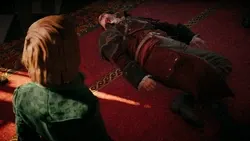
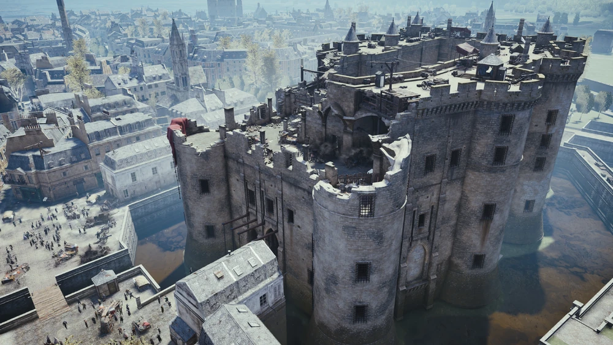
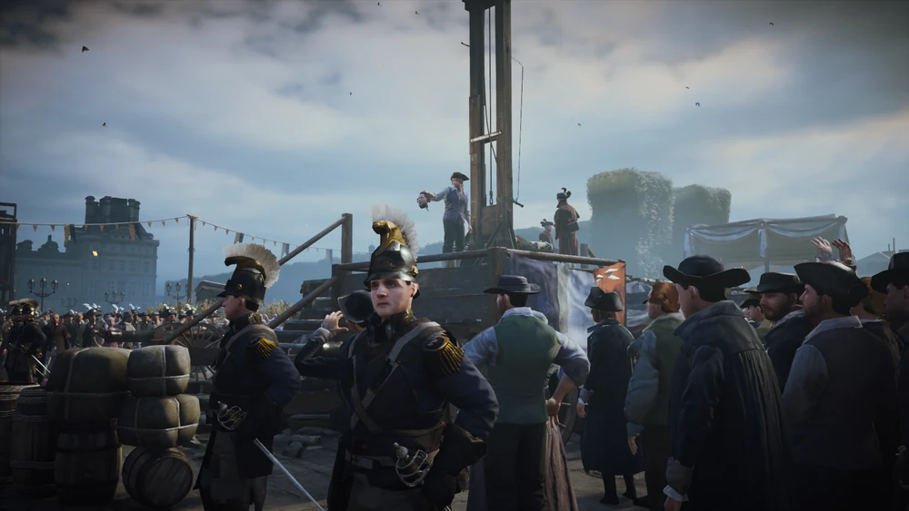
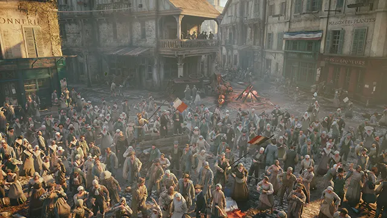

Morte do pai do arno
A morte de seu pai marcou profundamente a vida de Arno. Sem entender o motivo da tragédia, ele cresceu
carregando essa dor e muitas dúvidas. Com o tempo, essa perda o motivou a buscar a verdade, fazer justiça e encontrar seu lugar entre os Assassinos.

Tomada da Bastilha
A Tomada da Bastilha marcou o início da Revolução Francesa. No jogo, Arno presencia esse momento
histórico, quando o povo de Paris se revolta contra o governo e invade a prisão da Bastilha em busca de liberdade.

Execução do rei Luís XVI
A execução do rei Luís XVI foi um dos momentos mais marcantes da Revolução Francesa. No jogo, Arno presencia as mudanças
causadas pela queda da monarquia, enquanto a França entra em um período de grandes conflitos e transformações.

Período do Terror
Durante o Período do Terror, milhares de pessoas foram presas e executadas por serem
consideradas inimigas da Revolução. No jogo, Arno vive esse momento de medo e violência enquanto tenta impedir os planos dos Templários.